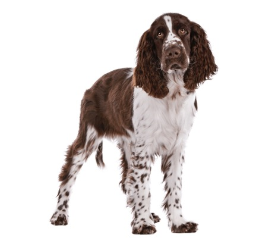

English Springer Spaniel Cookie Cutter
{kind=link}
I definitely wanted to do a cookie cutter of my dog's breed because during quarantine times we basically hang out 24/7. I picked this picture from wagwalking.com because it looks most similar to his body shape and I knew this would be a challenging cookie cutter to design in terms of the complex curves necessary to portray all of the hair details in the ears and legs.
Getting the silhouette done was pretty difficult. In photoshop even playing around with the color levels to make him completely black, the contrasts of the white and brown hair either didn't fill him in all the way or created black blotches around him. I ended up going with the latter, so he was mostly black, but I had to erase a lot of blotches around him manually. Even then I still had to manually color in some black portions a little bit, specifically the white in the face. The image trace went fine but the manual work to get it to a good silhouette state was the most time consuming.
I had some issues with Rhino since this was my first model with this computer in familiarizing myself with all the tools, buttons, shortcuts and everything. Google was helpful in this process. I extruded the planes I made in between my offsets and capped them at the top before exporting as an STL. When I rebuilt the curve to lessen the number of points. I definitely lost some fidelity in the silhouette. Time can only tell if it looks good, will need to print and test with some snickerdoodles!
< Back to HomePacific Northwest Cookie Cutter

For this one, I wanted to do something that represented how much more time I am spending in nature social distancing instead of indoors being social, and how grateful I am to be living somewhere so beautiful. When I found this shape on needpix.com, it drew my attention because I liked the idea of using the negative space on a cookie cutter. When I found out this was a .png I felt like I was cheating in terms of an image trace, but then I realized it was different enough from the cookie cutter shape I wanted, that it manifested a new challenge.

I filled the empty space on the mountain to black and I got rid of the sunset. For the trees, Since I want then to be negative space or an imprint, I filled them white. Before I did that, I had to cut off the trees closer to the edge because if I kept them it might compromise the structure of a cookie making it really weak on the edges and difficult to handle. In all of the color switching, the edges of the trees lost their sharpness so I had to use the pencil tool in photoshop to bring them back to life.
I didn't want the same fidelity issue as the springer spaniel, so I kept the points at 500 (even though the original was only 837) in order for the trees to keep their branch details. Also the offset for the flat surface of the cutter created two curves so I had to group them in order to create the planar surface. The edges of the trees on this design look much better but i am still concerned about how well it might cut!
Stay Home Cookie Cutter
{kind=link}
This cookie cutter of the Instagram Stay Home tag found on adweek.com represents how I am keeping in touch with my family and friends during this time, through social media. I chose this one because I wanted some simple shapes to be able to play with some embossing rather than just strictly cuts.
This one was actually pretty challenging to do because it required some fancy illustrator skills beyond what I am capable of so I had to use my resources including Google and my classmates. I had to join the anchor points of the end of the heart to close the heart shape so it creates the cut. Then I needed to create an independent curve that went around the heart and includes the edges of the roof. That was necessary because that cut is going to be different than the extrusion depth of the embossed parts being the roof and window. Then I needed to delete the inner heart trace since I don't plan on using that.
I had some issues with this object in creating the boolean union between the roof and the rest of the cutter, even though the rest of it was fine being unioned.
Instead of making it one full cutter, another idea was to just make it two different peices, the cut and the stamp. I was able to union the winow and roof on an extruded plane to union the stamp separate from the unions of the cutter and it's holding plane. I'm not sure how this design might affect the design on the actual cookie but we will see!